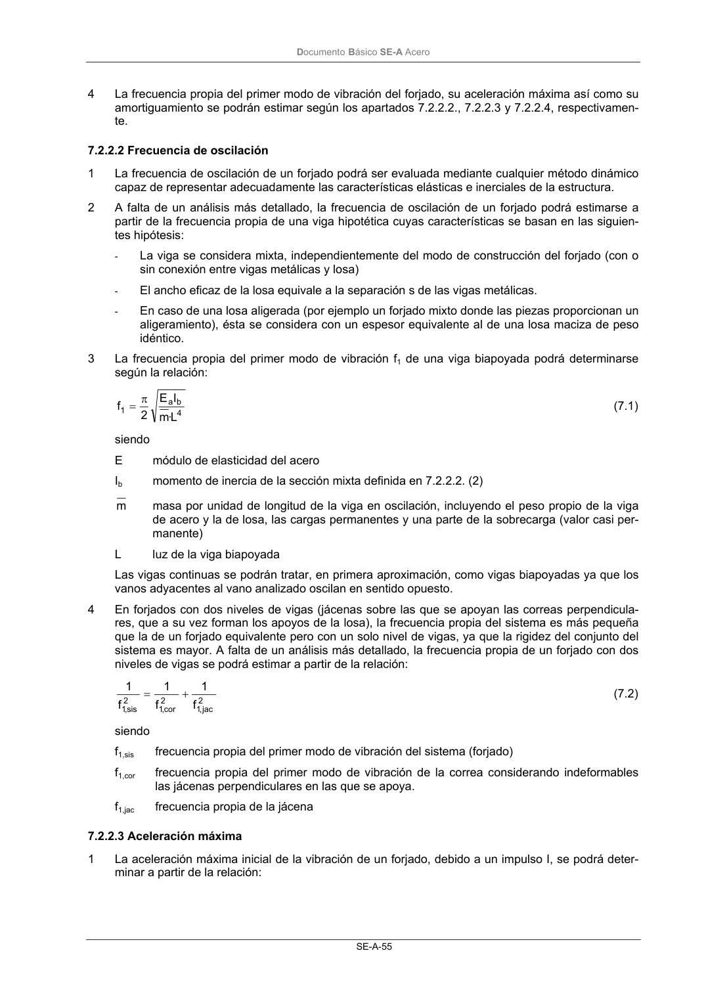

DB-SE-A · 7.2.2.3 Aceleración máxima · versión 2007-10-23 · capa oficial
Formatos: JSON compacto · Markdown · PDF fuente
Ámbito del documento · texto del ámbito · documento y tablas
ID técnico a0097 · PDF pág. 57-58 · jerarquía no validada por persona · contrastado con el literal de la página 57 (candidato tipográfico); no validado por persona · padre: raíz
7.2.2.3 Aceleración máxima 1 La aceleración máxima inicial de la vibración de un forjado, debido a un impulso I, se podrá deter- minar a partir de la relación: DocumentoBásico SE-A Acero SE-A-56 M I f 2 9,0 a 1 0 π = (7.3) siendo 0 a aceleración máxima inicial [m/s2] f1 frecuencia propia del primer modo de vibración del forjado [s-1] I impulso [Ns] M masa vibrante [kg] 2 En caso de que el impulso se deba al desplazamiento de una persona, se podrá admitir un valor de I=67 Ns 3 Para una viga biapoyada la masa vibrante eficaz podrá determinarse a partir de la relación: M=0,67·m·bL (7.4) siendo m masa por unidad de superficie del forjado en oscilación, incluyendo el peso propio, las car- gas permanente y una parte de la sobrecarga (valor cuasi-permanente) b ancho eficaz de la losa (b=s) s separación de las vigas de acero L luz de la viga biapoyada 4 En forjados con dos niveles de vigas (jácenas y correas), la superficie del forjado b·L a introducir en la relación (7.4) podrá determinarse de la siguiente manera: jac jac 2 jac ,1 sis ,1 cor cor 2 cor ,1 sis ,1 L b f f L b f f bL + = (7.5) siendo: bcor ancho de la losa tributaria de la correa (bcor= S) S separación de las correas Lcor luz de la correa bjac ancho de la losa tributaria de la jácena (bjac=Lcor) ljac luz de la jácena

PDF fuente redistribuible: copia fiel enlazada en esta página (SHA256 verificado).